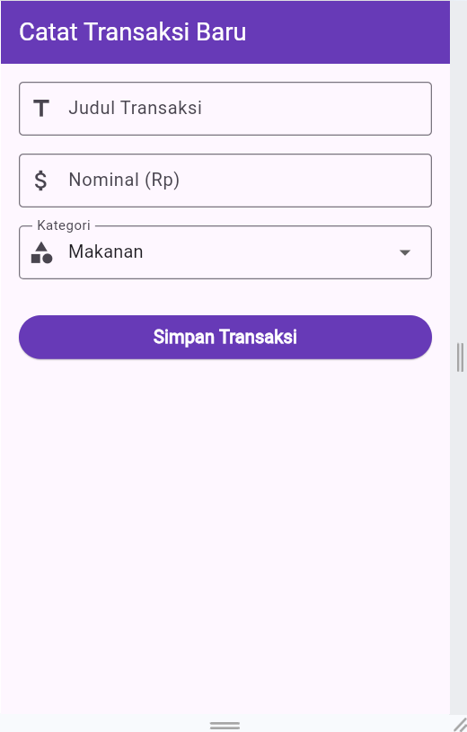

I. Pendahuluan
Pengembangan aplikasi mobile modern menuntut pembuatan antarmuka pengguna (User Interface) yang tidak hanya menarik dan responsif, tetapi juga mampu mengelola masukan data dari pengguna (user input) secara aman dan terstruktur. Framework Flutter, yang dikembangkan oleh Google menggunakan bahasa pemrograman Dart, menyediakan berbagai widget formulir (form widgets) yang sangat efisien untuk menangani proses pengumpulan data.
Praktikum ini berfokus pada materi pembuatan form input interaktif pada aplikasi Expense Tracker. Konsep dan teknologi utama yang diterapkan meliputi penggunaan Form, TextFormField, DropdownButtonFormField, pemanfaatan TextEditingController untuk menangkap nilai input, validasi input formulir menggunakan GlobalKey<FormState>, pemanggilan komponen interaktif berupa showDatePicker untuk memilih tanggal, serta menampilkan umpan balik ke pengguna menggunakan SnackBar.
Hubungan materi ini dengan pemrograman Dart/Flutter terletak pada penerapan komponen StatefulWidget untuk mengelola state atau status dinamis dari elemen-elemen formulir, seperti perubahan pilihan kategori pada dropdown serta pembaruan nilai tanggal pada pengontrol teks. Pemanggilan metode setState() digunakan untuk memicu perenderan ulang antarmuka saat variabel state berubah. Selain itu, manajemen memori juga diperhatikan melalui pelepasan resource pengontrol menggunakan metode dispose().
Materi ini sangat penting bagi mahasiswa Informatika karena formulir merupakan salah satu komponen paling mendasar dalam aplikasi interaktif. Pemahaman mengenai validasi data, pemilihan tipe input keyboard yang tepat, serta penyediaan antarmuka pemilihan tanggal yang user-friendly akan membentuk kebiasaan pemrosesan data yang aman dan meningkatkan pengalaman pengguna (user experience).
II. Tujuan Praktikum
Memahami struktur dan implementasi formulir interaktif di Flutter menggunakan widget Form dan TextFormField.
Menerapkan TextEditingController untuk mengelola, membaca, dan mereset nilai masukan teks.
Menggunakan GlobalKey<FormState> untuk melakukan validasi masukan formulir sebelum data diproses.
Menerapkan widget DropdownButtonFormField untuk menyediakan pilihan kategori secara dinamis.
Mengintegrasikan fungsi pemilih tanggal (showDatePicker) asynchronous serta memformat string tanggal secara manual tanpa paket tambahan.
Menerapkan ScaffoldMessenger dan SnackBar untuk memberikan konfirmasi visual saat data transaksi berhasil disimpan.
Menghubungkan halaman formulir (AddTransactionScreen) dengan berkas utama aplikasi (main.dart).
III. Langkah Praktikum
Berikut adalah langkah-langkah implementasi praktikum pembuatan form input interaktif pada aplikasi Expense Tracker yang disusun secara bertahap:
Nama/Judul Langkah: Konfigurasi Root App dan Halaman Utama
Kode Program (main.dart)
Penjelasan Kode:
import 'package:flutter/material.dart';: Mengimpor pustaka komponen UI Material Design dari Flutter.import 'add_transaction_screen.dart';: Mengimpor berkas formulirAddTransactionScreenagar dapat dipanggil sebagai halaman utama.void main() => runApp(const MyApp());: Titik masuk (entry point) utama program yang menjalankan widgetMyApp.class MyApp extends StatelessWidget: Kelas widget root aplikasi yang bersifat statis (tidak memiliki state internal yang berubah).MaterialApp: Widget pembungkus utama yang mengatur konfigurasi tema, judul aplikasi, dan navigasi awal.debugShowCheckedModeBanner: false: Menghilangkan pita debug di pojok kanan atas layar.primarySwatch: Colors.deepPurple: Menentukan tema warna ungu utama aplikasi.home: const AddTransactionScreen(): Menetapkan halaman formulir tambah transaksi sebagai antarmuka awal saat aplikasi dijalankan.
Hasil Praktikum:

Nama/Judul Langkah: Deklarasi Widget, State, Controller, dan Variabel State
Kode Program (add_transaction_screen.dart)
Penjelasan Kode:
class AddTransactionScreen extends StatefulWidget: Mengimplementasikan widget berbasis state dinamis karena formulir membutuhkan interaksi perubahan masukan data._formKey = GlobalKey<FormState>(): Kunci global unik untuk mengidentifikasi dan mengontrol status validasi formulirForm._titleController, _amountController, _dateController: ObjekTextEditingControlleryang digunakan untuk membaca, mengubah, dan mengontrol teks pada masing-masing bidang input judul, nominal, dan tanggal.String _selectedCategory = 'Makanan': Variabel state untuk menyimpan nilai kategori yang sedang dipilih, dengan nilai awal default 'Makanan'.List<String> _categories: Daftar opsi pilihan kategori transaksi.void dispose(): Metode siklus hidup (lifecycle method) yang dipanggil saat widget dihapus dari pohon widget; berfungsi melepaskan memori pengontrol teks agar tidak terjadi kebocoran memori (memory leak).
Hasil Praktikum: Langkah ini merupakan pembuatan logika internal dan pengontrol state aplikasi sehingga tidak menghasilkan perubahan fisik antarmuka secara langsung tanpa komponen UI pendukung.
Nama/Judul Langkah: Implementasi Date Picker dan Formats Date String
Kode Program (_pickDate)
Penjelasan Kode:
Future<void> _pickDate() async: Fungsi pemroses asynchronous yang mengembalikan objekFutureuntuk menangani operasi berdurasi (menunggu pilihan pengguna dari dialog kalender).await showDatePicker(...): Fungsi bawaan Flutter untuk menampilkan dialog pemilih tanggal Material dengan rentang tahun dari 2000 hingga 2100 serta nilai awal tanggal hari ini (DateTime.now()).if (picked != null): Memeriksa apakah pengguna memilih tanggal atau membatalkan dialog.padLeft(2, '0'): Memformat string hari dan bulan agar selalu terdiri dari 2 digit angka (misalnya tanggal 5 menjadi "05").setState(...): Memperbarui nilai teks pada_dateControllerdengan format "DD/MM/YYYY" sekaligus memicu perenderan ulang tampilan UI.
Hasil Praktikum: Memperlihatkan antarmuka modal dialog pemilih tanggal (Date Picker) yang muncul ketika kolom atau tombol tanggal ditekan.
Nama/Judul Langkah: Penyusunan Form, TextFormField Judul, Nominal, dan Dropdown Kategori
Kode Program (Layout & Elemen Form)
Penjelasan Kode:
Scaffold: Menyediakan struktur visual dasar halaman sepertiappBarungu danbody.SingleChildScrollView: Membungkus konten area kerja agar dapat digulirkan dan mencegah kebocoran/masalah tata letak (overflow) saat keyboard virtual muncul.Form(key: _formKey): Container pengelompok elemen formulir yang terikat dengan kunci validasi_formKey.Column(crossAxisAlignment: CrossAxisAlignment.stretch): Menyusun elemen input secara vertikal dan merenggangkan lebar elemen agar memenuhi area layar.TextFormField (Judul): Bidang masukan teks judul transaksi yang dilengkapi ikonIcons.titledan pemeriksaan pesan galat jika nilai kosong.TextFormField (Nominal): Bidang masukan angka dengankeyboardType: TextInputType.numberuntuk menampilkan keyboard angka, serta validasi memeriksa apakah masukan merupakan angka bulat (int.tryParse).DropdownButtonFormField: Menampilkan pilihan opsi kategori. FungsionChangedmemanggilsetState()untuk mengubah variabel state_selectedCategorysaat opsi dipilih.
Nama/Judul Langkah: Input Tanggal Read-Only, Validasi Formulir, dan Notifikasi SnackBar
Kode Program (Input Tanggal & Aksi Simpan)
Penjelasan Kode:
TextFormField (Tanggal): Kolom input tanggal yang disetreadOnly: trueagar pengguna tidak mengetik manual, melainkan memilih melalui kalender interaktif. Mengklik kolom (onTap) atau ikon plus (suffixIcon) akan menjalankan aksi_pickDate.ElevatedButton: Tombol utama berwarna ungu untuk memproses penyimpanan data._formKey.currentState!.validate(): Menjalankan fungsi validator pada seluruh bidangTextFormFielddi dalamForm. Mengembalikan nilaitruejika seluruh bidang masukan valid.ScaffoldMessenger.of(context).showSnackBar(...): Menampilkan umpan balik pesan pop-up hijau di bagian bawah layar berisi rincian teks judul, nominal, dan tanggal transaksi yang berhasil disimpan.
Hasil Praktikum:

IV. Kesimpulan
- Berdasarkan seluruh Rangkaian kegiatan praktikum yang telah dilakukan, dapat disimpulkan bahwa:
-
Pembuatan formulir interaktif pada Flutter dapat diimplementasikan dengan sangat terstruktur menggunakan kombinasi widget
Form,TextFormField, danDropdownButtonFormField. -
Penggunaan
TextEditingControllermemudahkan proses pengontrolan dan pengambilan data dari elemen input teks, sedangkan pembatalan memori melalui metodedispose()memastikan aplikasi berjalan efisien. -
Validasi masukan data berhasil diterapkan menggunakan
GlobalKey<FormState>, yang secara otomatis memeriksa kelayakan nilai input sebelum diproses lebih lanjut. -
Fitur pemilih tanggal interaktif (
showDatePicker) dan pemformatan teks manual memberikan fleksibilitas tanpa perlu ketergantungan pada dependensi paket pihak ketiga tambahan. -
Penggunaan
ScaffoldMessengerdanSnackBarmemberikan umpan balik langsung yang informatif kepada pengguna saat transaksi berhasil disimpan. - Integrasi antara komponen UI, pengelolaan state lokal, dan alur validasi formulir pada kode program berhasil menghasilkan aplikasi pencatat transaksi yang responsif, adaptif, dan bebas dari error layout.